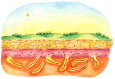

The worm pile is built by alternating layers of dirt and organic material, including grass clippings, weeds, cut leaves and kitchen scraps. Keep the pile covered with a thin layer of grass or leaves; it'll look neater and will keep the worms cooler in summer and warmer in winter. Over time, your worms will digest the organic matter so that, when you open your pile in spring, you'll find at the center a soil rich in worms, worm eggs and castings.